フィルムスキャナ考察 ： ネガフィルムの取り込み
Home > Software > ソフトウエア開発・サーバ管理のメモ帳 > このページ
Created on 2002/04, Last Update 2004/10/15
| 概要 スキャナドライバの設定 スキャン実例（晴天日） スキャン実例（曇天日・建物内） 手動でネガ反転処理 |
注意：このページは最終更新が2002年04月で、現在では利用できない情報の可能性があります。
晴天日の景色取り込み（石垣造りの城壁）
ギリシアのロドス島旧市街のセント・アタナシウス門の写真です。利用したフィルムはKODAK GOLD 400（ネガ フィルム）。
基準となるスキャン結果をPhotoCDにしたいのですが、読み取るソフトや設定でまったく違う色になります。
ここでは、PhotoshopでNegativeモードにして取り込んだ画像が「最も忠実な色再現をしている」と考えることとします（私自身も、あの場所ではそういう色だったと思うため）。
フィルムから取り込んだものは、汎用ドライバ「vuescan」のものが最もよい結果なのではないでしょうか。できることなら、WhitePointをさらに0.1程度下げるか、Brightnessをさらに0.1ほど下げたほうが、ぎらつきがなくなると思います（個人的には、WhitePointをさらに0.1下げるのがよいと思う）。
空の部分のクローズアップを見ると、フィルム スキャナでの取り込み結果とPhotoCDの間で、ずいぶん粒状感が違うなと思います。やはり、プロ機材で取り込んだPhotoCDに軍配が上がりますね。（Dimage Scan Dual II でマルチパスのスキャンを行うと、うまくいかない）
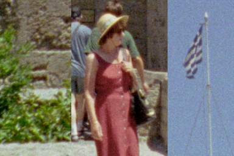
Dimage Scan Dual II 純正TWAINドライバ（スキャン毎AF, sRGB, 2820dpi）
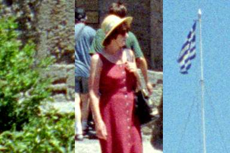
vuescan（24bit BlackPoint=3, WhitePoint=0.4, Bright=0.6, Kodak Gold 400G1, sRGB, 2820dpi）
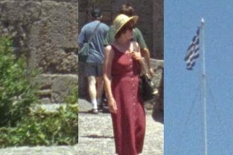
PhotoCD (Paint Shop Proで読み込み)
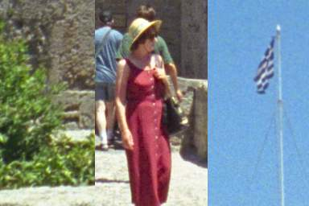
PhotoCD (Photoshopで読み込み。Negativeモード)
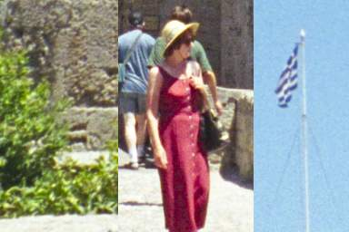
PhotoCD (Photoshopで読み込み。Photo YCCモード)
晴天日の景色取り込み（青空と海、白い家）
ギリシアのロドス島リンドスの景色です。
これも、PhotoCDがオリジナルの色に近いとすれば、やはり、vuescan がマトモにスキャンできているのではないでしょうか。「石垣造りの城壁」のスキャン結果の経験を踏まえ、WhitePoint = 0.3 としています。
クローズアップ写真を見て分かることは、「純正TWAINドライバ」では右の扉にあるスリットがぼんやりしてますが、「汎用ドライバ vuescan」ではスリットがちゃんと分解されて表示されています。同じスキャナを使っていて、これだけ差が出るのは不思議です。vuescanがシャープネス処理やアン・シャープマスクを「こそっと」かけているのかと疑ってみました。が、一番下につけておいたRAWデータでもちゃんと表示されているところを見ると、「純正TWAINドライバ」が、粒状感を減らすために「こそっと」ソフトネス・フィルタをかけていることが分かります。
「汎用ドライバ vuescan」のクローズアップの船のところに、「ホコリ」がのっています。安物スキャナはホコリ取りのための赤外線モードを持っていないので、せっせと手で取らないといけません。
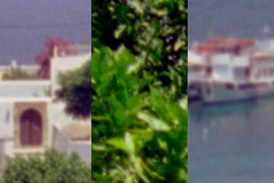
Dimage Scan Dual II 純正TWAINドライバ（スキャン毎AF, sRGB, 2820dpi）
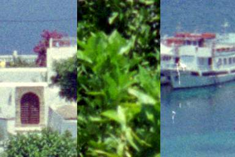
vuescan（24bit BlackPoint=3, WhitePoint=0.3, Bright=0.6, Kodak Gold 400G1, sRGB, 2820dpi）
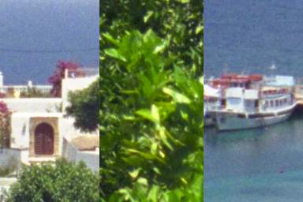
PhotoCD (Photoshopで読み込み。Negativeモード)
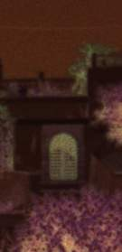
vuescan 扉の部分のRAWデータ
晴天日の景色取り込み（日陰のある景色）
ギリシアのロドス島旧市街の路地写真です。
３種類がほとんど同じに見えます。取り込みやすい画像なのでしょうか。
その中で、「純正TWAINドライバ」の左側に茂っている葉っぱの色が、「プラスチックの模造品」のようになっているので、やはりおかしいですね。
クローズアップでは、ハイライト部分とシャドウ部分の両方を切り取ってきましたが、どのスキャン結果でもまあまあ取り込めているのではないでしょうか。クローズアップの右側では、PhotoCDが他を凌いでいると見えますね。
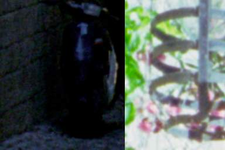
Dimage Scan Dual II 純正TWAINドライバ（スキャン毎AF, sRGB, 2820dpi）
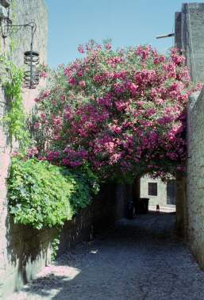
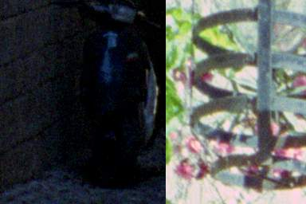
vuescan（24bit BlackPoint=3, WhitePoint=0.3, Bright=0.6, Kodak Gold 400G1, sRGB, 2820dpi）
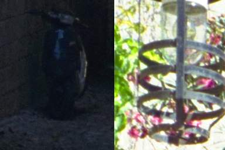
PhotoCD (Photoshopで読み込み。Negativeモード)